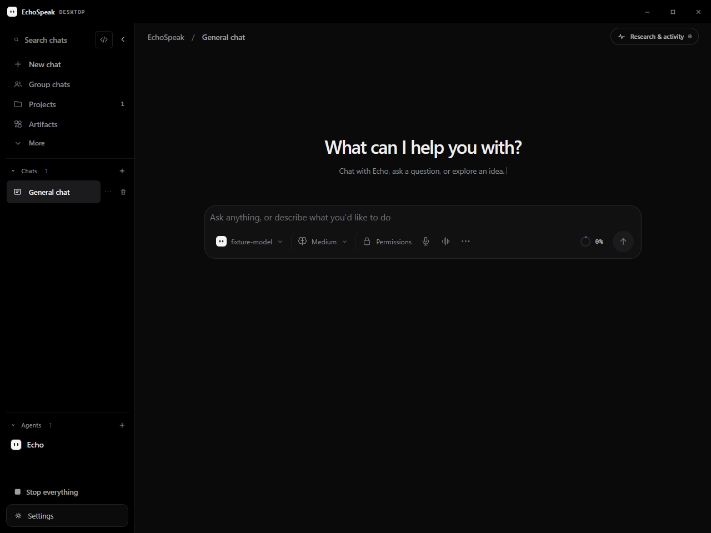
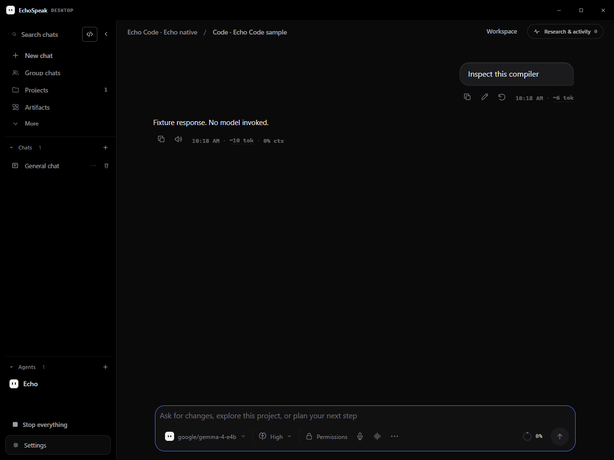
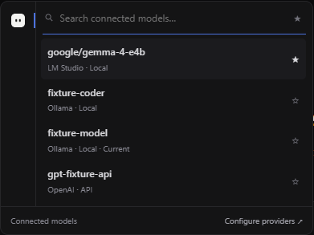
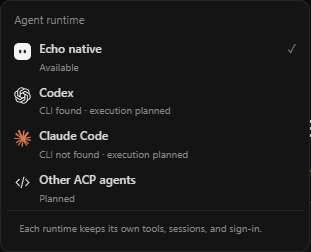
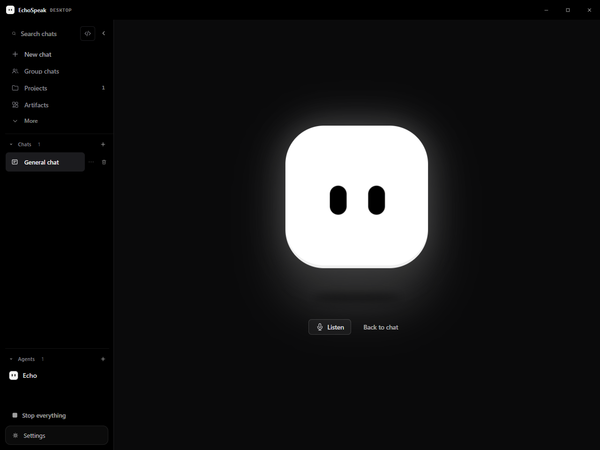

EchoSpeak 11.10.5
A cleaner Chat, Echo Code and voice workspace · 25 October 2026
One quiet header and a compact starting composer
The black desktop header matches the sidebar. Search, the Chat/Code switch and Collapse share a row; Chats comes before Agents. The breadcrumb stays at the top with Research & activity on the right. Only the typewriter description is visible below the welcome title.


Connected models, one EchoSpeak mark
The same native composer is used in Chat and Code. Model catalogs that report a reachable connection appear together with Local/API labels; disconnected providers stay out of the list. Configure providers remains the route to connecting them.


A centered voice view

What was checked
Source and fixture verification
- TypeScript, 180 frontend tests and the production build passed.
- 16 desktop contract checks passed.
- Desktop fixture checks cover the header, compact input/autosize/focus, connected Local/API selection, favorites, runtime marks, native Code routing, voice layout, all three looping descriptions, reduced motion and narrow/light views.
- The current verification record lists source hashes and check results separately from historical builds.
Owner acceptance and release
- Installed WebView2/native window frame and real microphone/model behavior still need owner testing.
- A signed 11.10.5 installer requires the owner's local signing-key password.
- No 11.10.5 installer installation or publication is claimed here.
- Real voice errors and approval requests are exceptions to the minimal normal voice view.